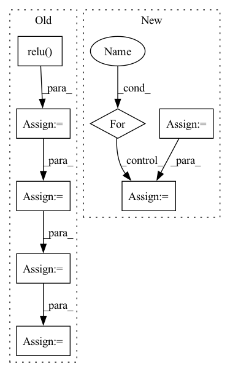

Pattern ID :13468
Before Change
if self.use_bn:
output = F.relu(self.bn1(self.conv1(input_data)))
point_feature = F.relu( self.bn2(self.conv2(output)))
output = F.relu(self.bn3(self.conv3(point_feature)))
output = F.relu(self.bn4(self.conv4(output)))
output = F.relu(self.bn5(self.conv5(output)))
else:
output = F.relu(self.conv1(input_data))
point_feature = F.relu(self.conv2(output))After Change
if input_data.shape[1] != 3:
raise RuntimeError("shape of x must be of [Batch x 3 x NumInPoints]")
output = input_data
for idx, layer in enumerate(self.layers):
output = layer(output)
if idx == 1 and not self.global_feat: point_feature = output
if self.global_feat:In pattern: SUPERPATTERN
Frequency: 3
Non-data size: 8
Instances Fragment ID: 45450709
Project Name: vinits5/learning3d
Commit Name: c324ac5d5f8d9eb65711625b30b3067ad425b739
Time: 2020-03-21
Author: vinitsarode5@gmail.com
File Name: models/pointnet.py
M Class Name: PointNet
N Class Name: PointNet
M Method Name: forward(2)
N Method Name: forward(2)
M Parent Class: torch.nn.Module
N Parent Class: torch.nn.Module
M File Name: models/pointnet.py
N File Name: models/pointnet.py
M Start Line: 38
M End Line: 57
N Start Line: 57
N End Line: 68
Before Change
net = self.bn1(self.resid1(net) + net)
net = self.relu(net)
net = self.bn2(self.resid2(net) + net)
net = self.relu( net)
net = self.bn3(self.resid3(net))
net = self.relu(net)
net = self.bn4(self.resid4(net) + net)
net = self.relu(net)
net = self.bn5(self.resid5(net))
net = self.relu(net)
net = net.view(net.shape[0], -1)
net = self.fc(net)
net = torch.sigmoid(net)After Change
net = self.conv(x)
net = self.block1(net)
for block in self.resids1:
net = block(net) + net
layer_list.append(net)
net = self.block2(net)
for block in self.resids2:
net = block(net) + net
layer_list.append(net)
net = self.block3(net)
for block in self.resids3:
net = block(net) + net
layer_list.append(net)
net = self.block4(net)
layer_list.append(net) Fragment ID: 45450707
Project Name: dwightfoster/pytorch-tecogan
Commit Name: cb2b9c771c26f4971d6d96352cc426e179853453
Time: 2021-03-17
Author: dwightfoster03@gmail.com
File Name: code/models.py
M Class Name: discriminator
N Class Name: discriminator
M Method Name: forward(2)
N Method Name: forward(2)
M Parent Class: nn.Module
N Parent Class: nn.Module
M File Name: code/models.py
N File Name: code/models.py
M Start Line: 135
M End Line: 156
N Start Line: 125
N End Line: 136
Before Change
// Position embedding
// lengths: [4, 2, 5]
// position: [[4, 3, 2, 1, 0], [2, 1, 0, 0, 0], [5, 4, 3, 2, 1]]
position = self.len_range[:seq_len].unsqueeze(0).repeat(batch_size, 1)
position = (lengths[:, None] - position) * valid_his.long()
pos_vectors = self.p_embeddings(position)
his_vectors = his_vectors + pos_vectors
// Self-attention
attn_mask = 1 - valid_his.unsqueeze(1).repeat(1, seq_len, 1)
for i in range(self.num_layers):
residual = his_vectors
// self-attention
query, key, value = self.Q(his_vectors), self.K(his_vectors), self.V(his_vectors)
scale = self.emb_size ** -0.5
his_vectors = components.scaled_dot_product_attention(
query, key, value, scale=scale, attn_mask=attn_mask)
// mlp forward
his_vectors = self.W1(his_vectors).relu()
his_vectors = self.W2(his_vectors) // [batch_size, history_max, emb_size]
// dropout, residual and layer_norm
his_vectors = self.dropout_layer(his_vectors)
his_vectors = self.layer_norm(residual + his_vectors)
// ↑ layer norm in the end is shown to be more effective
his_vectors = his_vectors * valid_his[:, :, None].float()
After Change
causality_mask = np.tril(np.ones((1, 1, seq_len, seq_len), dtype=np.int))
attn_mask = torch.from_numpy(causality_mask).to(self.device)
// attn_mask = valid_his.view(batch_size, 1, 1, seq_len)
for block in self.transformer_block:
his_vectors = block(his_vectors, attn_mask)
his_vectors = his_vectors * valid_his[:, :, None].float()
his_vector = (his_vectors * (position == 1).float()[:, :, None]).sum(1) Fragment ID: 45450734
Project Name: thuwangcy/rechorus
Commit Name: dba1d0bd7b6d7296ed6c730793e0f61278007dc2
Time: 2020-11-08
Author: THUwangcy@gmail.com
File Name: src/models/sequential/SASRec.py
M Class Name: SASRec
N Class Name: SASRec
M Method Name: forward(2)
N Method Name: forward(2)
M Parent Class: GRU4Rec
N Parent Class: GRU4Rec
M File Name: src/models/sequential/SASRec.py
N File Name: src/models/sequential/SASRec.py
M Start Line: 41
M End Line: 72
N Start Line: 41
N End Line: 66